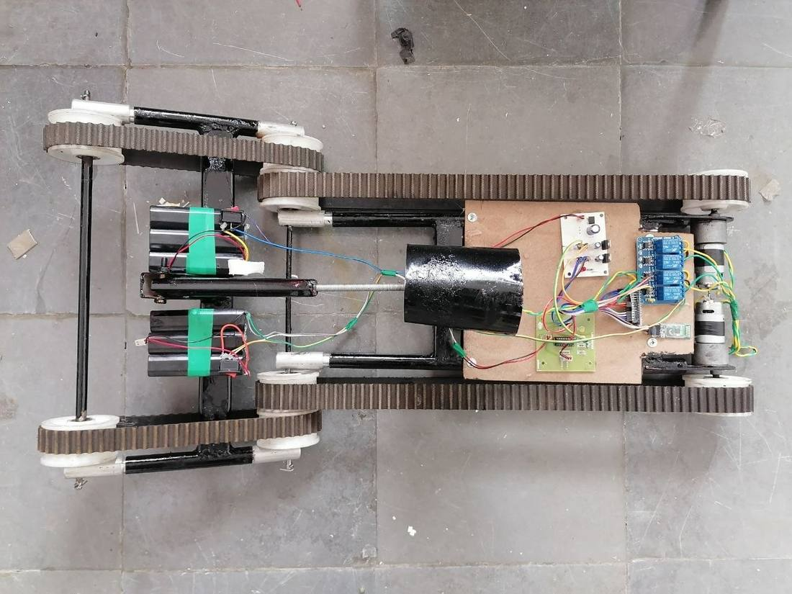
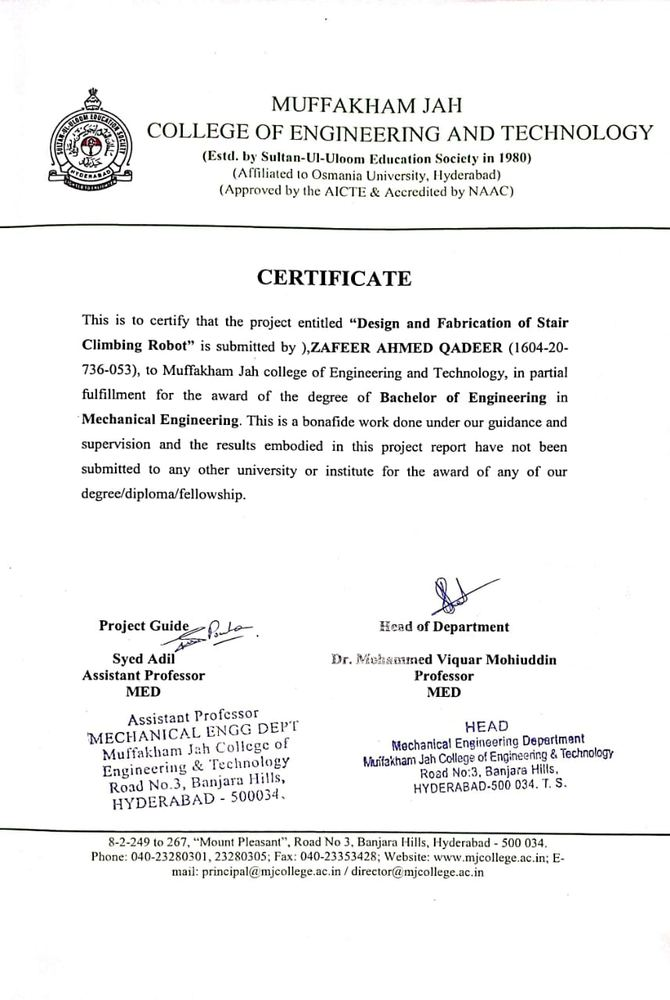

02 / BUILD & TEST
Test. Fail. Understand.
A stair-climbing robot pushed beyond its working limit. Four test conditions. A design investigation shaped by what actually happened.
A tracked, belt-driven platform on a 6061-T6 aluminium frame: four belt drives, eight Ø60 mm pulleys with 10 mm grooves, four 300 rpm geared DC motors, Arduino Uno and HC-05 control. The belt system went through two profile iterations before the toothed profile was adopted.
We tested it past its working limit rather than stopping at the last success, recording speed and power draw at each stair rise.
| Stair rise | Speed | Power | Result |
|---|---|---|---|
| 4 in | 0.25 m/s | 60 W | Stable |
| 6 in | 0.20 m/s | 70 W | Stable |
| 8 in | 0.15 m/s | 85 W | Partially stable, slipping |
| 10 in | n/a | n/a | Failed to climb |
The team initially investigated motor sizing. The next analysis focused on traction and stability, alongside the drivetrain calculations, to understand the climbing limit.

Drivetrain and traction investigated4-point test matrixRoot cause corrected

OPEN FULL SIZE ↗